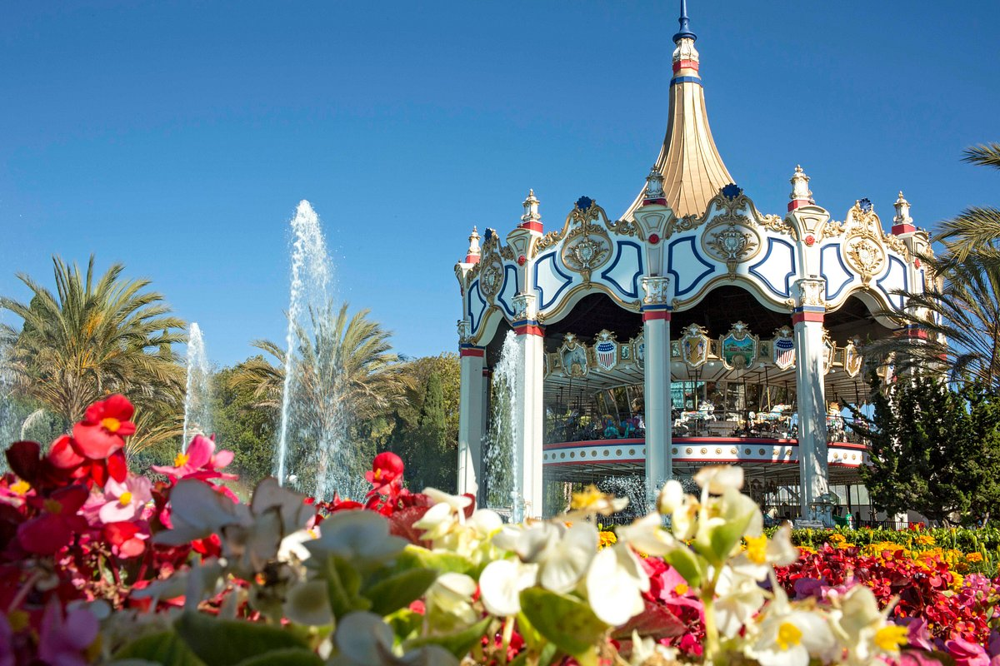

Videos & Recordings
All videos from the workshop will be uploaded here.

CrossFL-2022 Workshop on "Cross-Community Federated Learning: Algorithms, Systems and Co-designs"
CrossFL-2022 is co-located with MLSys2022 in the beautiful city of Santa Clara, CA on April 14, 2022.
Federated Learning (FL) has recently emerged as the overarching framework for distributed machine learning (ML) beyond data centers. FL, in both cross-device and cross-silo, enables collaborative ML model training from originally isolated data without sacrificing data privacy. Such potential use of FL has since then attracted an explosive attention from the ML, computer systems, optimization, signal processing, wireless networking, data mining, computer architecture, privacy and security communities.
FL-related research is penetrating into almost every science and engineering discipline. However, as FL comes closer to being deployable in real-world systems, many open problems in FL today cannot be solved solely by researchers in one community. For example, designing most effcient and reliable FL algorithms require leveraging expertises from systems, security, signal processing and networking communities. On the other hand, designing most effcient and scalable computing and networking systems require leveraging collaborative advances from ML, data mining, and optimization communities.
In light of the differences in education backgrounds, toolboxes, viewpoints, and design principles of different communities, this workshop aims to break community barriers and bring researchers from pertinent communities together to address open problems in FL. More importantly, this workshop aims to stimulate discussion among experts in different fields (e.g., industry and academia) and identify new problems that remain underexplored from an interdisciplinary perspective.
Specifically, the topics of interest include but not limited to:
- Adversarial robustness and security in Federated Learning
- Data privacy in Federated Learning
- Mathematical optimization for Federated Learning
- Communication and networking for Federated Learning
- Hardware acceleration for Federated Learning
- Hardware and algorithms co-designs for Federated Learning
- Algorithms and systems co-designs for Federated Learning
We hope that this workshop will serve as a forum for researchers across different disciplines to bring forward and discuss challenging topics, share new ideas and exchange experience in the deployment of such systems, both from a theoretical and experimental perspective.